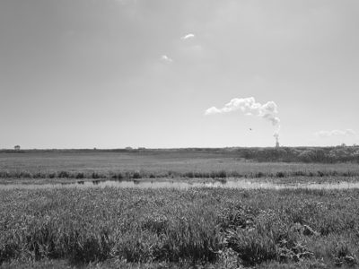
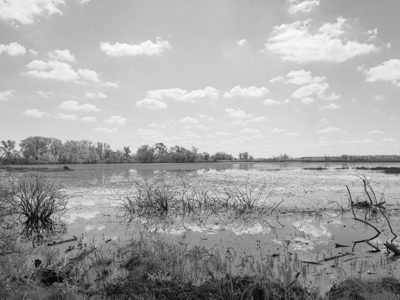
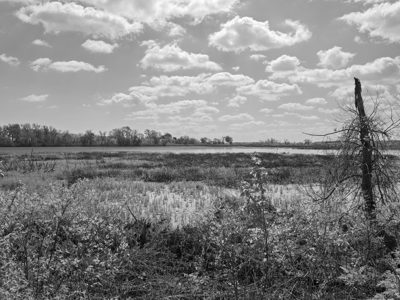
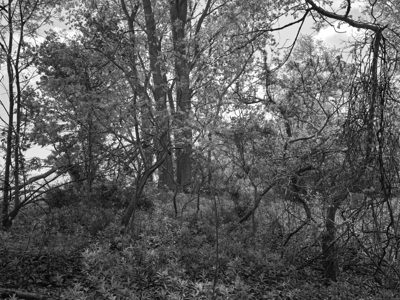
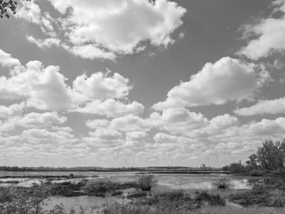

Public Lands Institute
Map
Archive
About
Magee Marsh Wildlife Area
OH

Magee Marsh Wildlife Area 1 · 2026-05-07
_DSF1947.jpg
Magee Marsh Wildlife Area 2 · 2026-05-07
_DSF1954.jpg

Magee Marsh Wildlife Area 3 · 2026-05-07
_DSF1962.jpg
Magee Marsh Wildlife Area 4 · 2026-05-07
_DSF1965.jpg

Magee Marsh Wildlife Area 5 · 2026-05-07
_DSF1968.jpg
Magee Marsh Wildlife Area 6 · 2026-05-07
_DSF1973.jpg

Magee Marsh Wildlife Area 7 · 2026-05-07
_DSF1976.jpg

Magee Marsh Wildlife Area 8 · 2026-05-07
_DSF1977.jpg
← Newark Earthworks
Oak Openings Metropark →